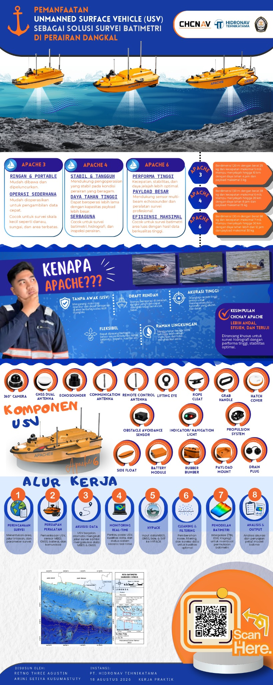

U
UNDIP × HIDRONAVSurvey Solution

KERJA PRAKTIK • 2026
USV Surveying
USV Surveying
Project
Bathymetric Survey • CHCNAV Apache 6
PT Hidronav × Teknik Geodesi UNDIP
SURVEY PLATFORM
Apache Series
HASIL UTAMA
3 metode
Hasil Peta Batimetri
↗
USV Surveying HubKunjungi website katalog CHCNAV Apache
→